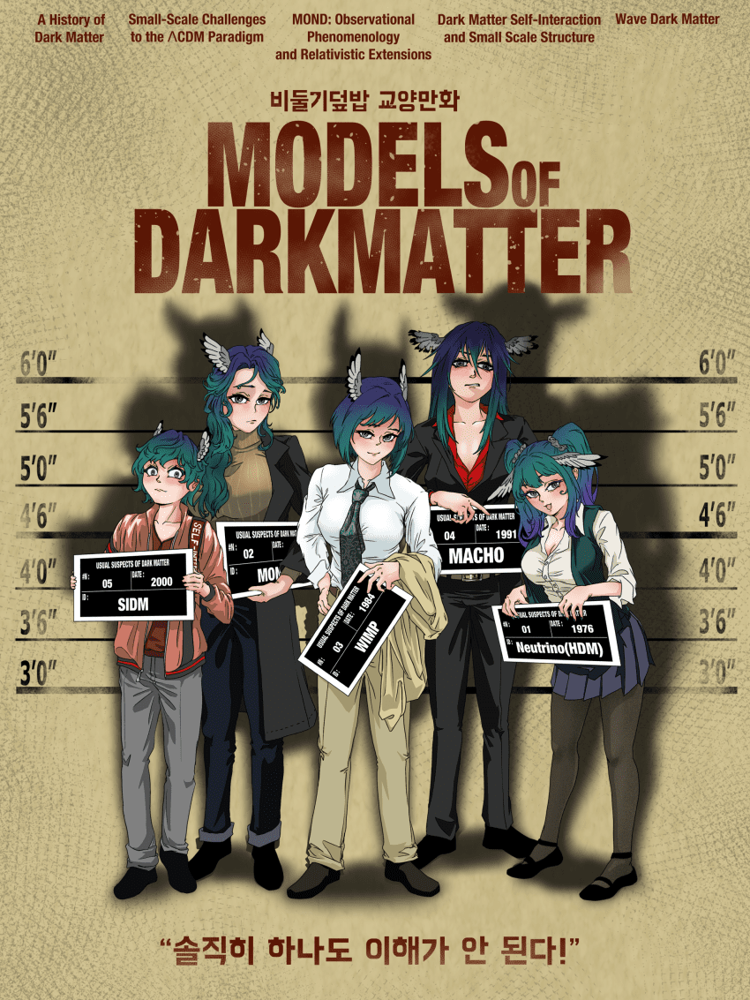
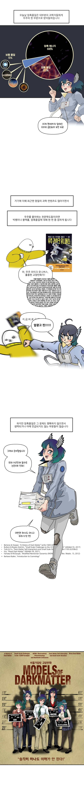
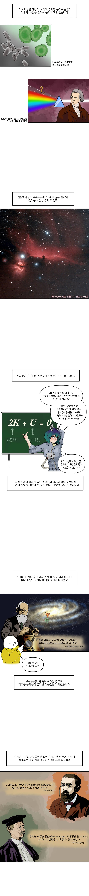
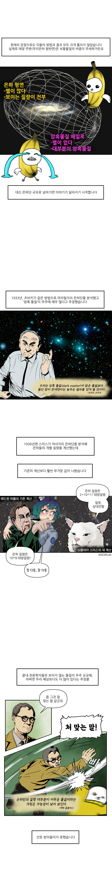
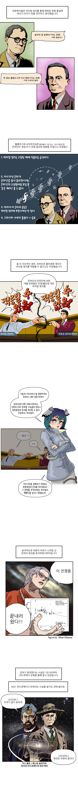
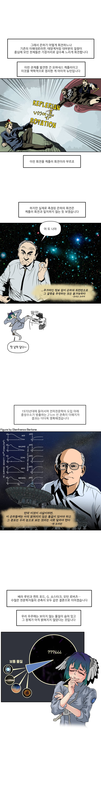
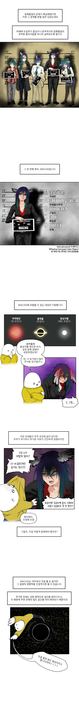
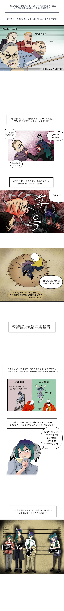
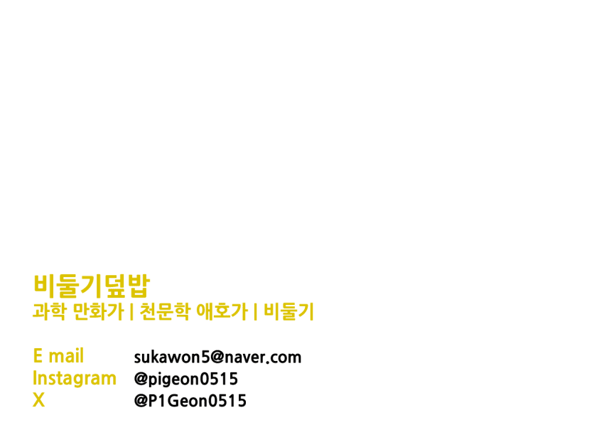

전혀 상관없는 이전 만화

썸넬임. 무시해도됨








여캐를 잔뜩 그려보고 싶었으나 분량이 너무 길어져서 할아버지들 잔뜩 나오는 파트에서 끊겨버림
바리온 암흑물질 이야기는 CDM모델 나오고 한번 더 다룰거임
참고논문은 아래, 복붙하면 마지막 우주론교재말고는 다 오픈엑세스임
Bertone & Hooper, “A History of Dark Matter”
(arXiv:1605.04909v2)
Bullock & Boylan-Kolchin, “Small-Scale Challenges to the ΛCDM
Paradigm” (ARA&A 55, 2017)
Tulin & Yu, “Dark Matter Self-interactions and Small Scale
Structure” (arXiv:1705.02358v2)
Hui, “Wave Dark Matter” (ARA&A 59, 2021)
Famaey & McGaugh, “Modified Newtonian Dynamics (MOND)”
(Living Rev. Relativ. 15, 2012)
Barbara Ryden, “Introduction to Cosmology”
작가 본진
댓글
수집 당시 댓글 104개
· 비둘기덮밥 · 11.16 09:17:27
· ㅇㅇ · 11.16 09:21:08
· 비둘기덮밥 · 11.16 09:23:03
응웅앵 · 11.16 09:25:32
수류탄이야 · 11.16 09:29:26
영웅적인판단 · 11.16 09:48:49
ㅇㅇ · 11.16 10:05:14
· 비둘기덮밥 · 11.16 10:12:43
· ㅇㅇ · 11.16 10:55:40
· ㅇㅇ · 11.16 12:16:18
· 고픈 · 11.16 13:42:06
· ㅇㅇ · 11.16 17:38:46
· ㅇㅇ · 11.16 20:53:46
· 욕받이 · 11.17 21:46:44
· ㅇㅇ · 11.17 21:54:05
· ㅇㅇ · 11.18 00:51:17
ㅇㅇ · 11.16 11:41:42
Freebird · 11.16 11:43:02
ㅇㅇ · 11.16 12:42:20
버거먹는자 · 11.16 13:00:48
· 비둘기덮밥 · 11.16 13:04:17
· ㅇㅇ · 11.16 14:05:00
· ㅇㅇ · 11.17 22:14:16
ㅇㅇ · 11.16 14:05:01
· 비둘기덮밥 · 11.16 14:15:13
· 비둘기덮밥 · 11.16 14:16:10
· ㅇㅇ · 11.17 21:25:26
· ㅇㅇ · 11.18 04:05:43
· Neu5Gc · 11.18 05:59:51
삼샄 · 11.16 14:11:29
· ㅇㅇ · 11.17 21:15:21
· ㅇㅇ · 11.17 21:26:46
백석행 · 11.16 15:52:46
· 백석행 · 11.16 15:55:10
ㅇㅇ · 11.16 16:01:35
ㅇㅇ · 11.16 16:11:04
ㅇㅇ · 11.16 17:10:24
ㅇㅇ · 11.17 00:32:07
봇치쟝 · 11.17 21:11:19
ㅇㅇ · 11.17 21:12:35
ㅇㅇ · 11.17 21:12:46
· ㅇㅇ · 11.17 21:20:38
ㅇㅇ · 11.17 21:15:09
ㅇㅇ · 11.17 21:17:39
ㅇㅇ · 11.17 21:18:13
ㅇㅇ · 11.17 21:18:53
ㅇㅇ · 11.17 21:19:09
ㅇㅇ · 11.17 21:20:51
ㅇㅇ · 11.17 21:24:17
· ㅇㅇ · 11.17 22:46:17
· ㅇㅇ · 11.18 14:48:51
그냥 더
나은 대안
이 없자나
ㅇㅇ · 11.17 21:27:05
하늘소77 · 11.17 21:27:31
씹을거리 · 11.17 21:31:59
ㅇㅇ · 11.17 21:34:26
ㅇㅇ · 11.17 21:37:50
· ㅇㅇ · 11.18 09:47:18
ㅇㅇ · 11.17 21:40:41
ㅇㅇ · 11.17 21:41:32
ㅇㅇ · 11.17 21:41:53
ㅇㅇ · 11.17 21:42:07
· ㅇㅇ · 11.18 01:36:52
ㅇㅇ · 11.17 21:44:20
ㅇㅇ · 11.17 21:50:54
ㅇㅇ · 11.17 21:51:48
ㅇㅇ · 11.17 22:00:14
ㅇㅇ · 11.17 22:10:36
1 · 11.17 22:11:16
· ㅇㅇ · 11.18 05:09:32
· ㅇㅇ · 11.18 05:13:05
· ㅇㅇ · 11.18 05:14:24
· Neu5Gc · 11.18 06:01:46
ㅇㅇ · 11.17 22:18:27
ㅇㅇ · 11.17 22:34:29
ㅇㅇ · 11.17 22:35:00
ㅇㅇ · 11.17 22:44:38
반의반고닉 · 11.17 23:01:56
ㅇㅇ · 11.17 23:40:21
· ㅇㅇ · 11.18 08:10:40
ㅇㅇ · 11.17 23:40:42
ㅇㅇ · 11.17 23:41:53
ㅇㅇ · 11.17 23:58:00
ㅇㅇ · 11.17 23:59:34
ㅇㅇ · 11.18 00:11:29
ㅇㅇ · 11.18 00:27:12
환란 전 교회 휴거 · 11.18 00:29:27
ㅇㅇ · 11.18 01:26:58
ㅇㅇ · 11.18 01:27:02
ㅇㅇ · 11.18 01:37:03
ㅇㅇ · 11.18 01:37:07
ㅇㅇ · 11.18 02:29:52
주소킹 · 11.18 03:00:16
ㅇㅇ · 11.18 04:41:39
ㅇㅇ · 11.18 07:44:37
냉소농도측정기 · 11.18 07:45:44
ㅇㅇ · 11.18 08:10:32
ㅇㅇ · 11.18 09:26:46
ㅇㅇ · 11.18 09:41:59
· ㅇㅇ · 11.18 09:42:13
ㅇㅇ · 11.18 10:43:32
쫍쫍이 · 11.16 09:13:02
복슬복슬Teemo · 11.16 09:13:36
· 비둘기덮밥 · 11.16 09:15:05
ㅇㅇ · 11.16 09:16:54